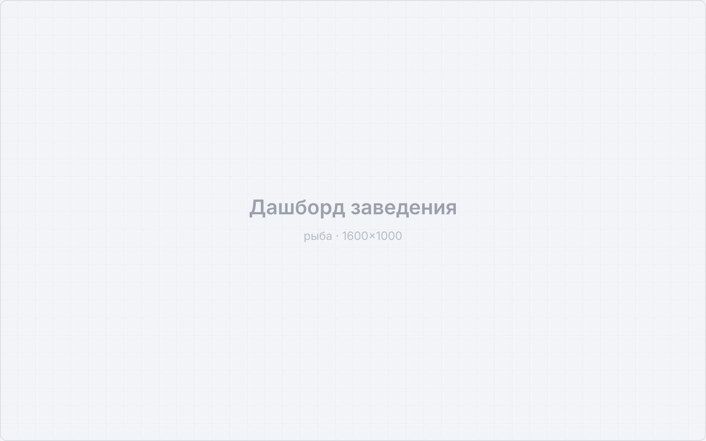
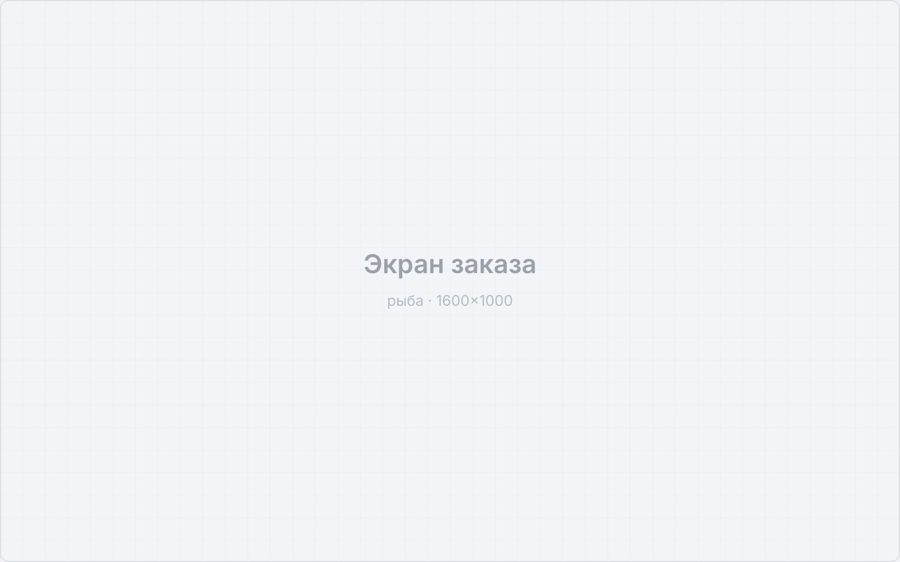
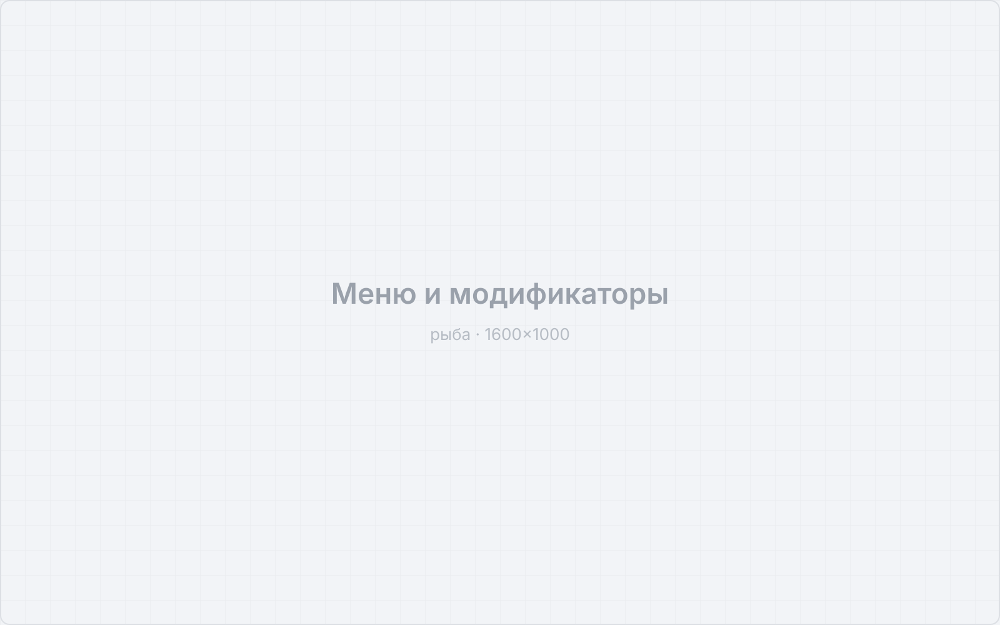
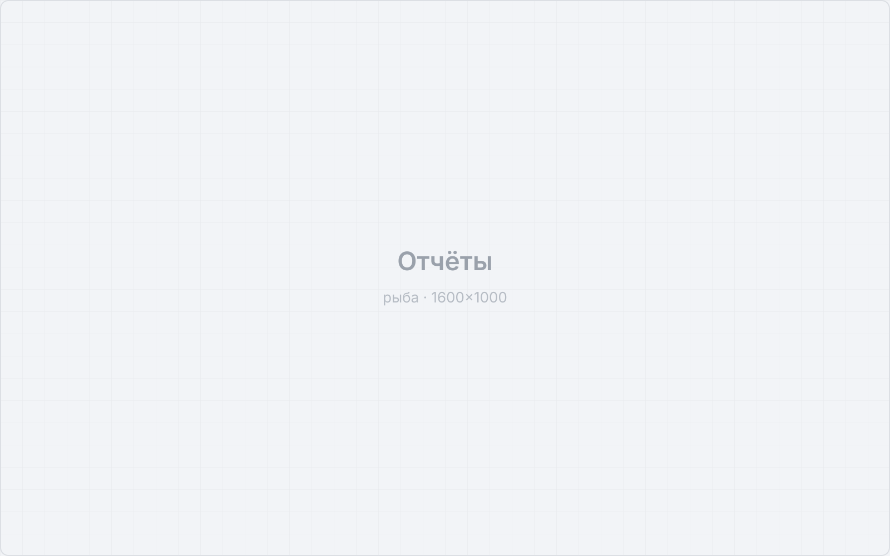

Роль: Product Designer
Концепция • Визуальный стиль • UX/UI • Дизайн-система • Delivery
Новый стартап: SaaS для автоматизации заведений. Продукт разрабатывается сейчас, я делаю его с нуля – от визуального языка до сценариев работы в зале.
Сделать современный, удобный и интуитивный SaaS-инструмент для ресторанов. Не переделать существующий, а спроектировать продукт, в котором новый сотрудник разбирается без обучения, а опытный работает быстрее, чем в блокноте.
Планка простая: если официанту в час пик проще крикнуть на кухню, чем нажать кнопку, – интерфейс не готов.
Отталкиваюсь от реальной смены, а не от списка функций. Сначала разбираю, из каких действий состоит работа зала и кухни, где возникают ожидание и ошибки, и уже под это собираю экраны.
Заполнить: как именно исследуете рынок и пользователей – наблюдение в заведениях, интервью с рестораторами, разбор конкурентов
Собран визуальный язык и компонентная база, спроектированы ключевые сценарии: заказ в зале, меню с модификаторами, работа кухни, отчетность для управляющего.
Заполнить: перечислить готовые модули и что в работе сейчас




Скриншоты – заглушки, ждут боевых экранов.
Продукт в активной разработке. Метрики появятся после запуска – здесь будут скорость оформления заказа, время адаптации нового сотрудника и число подключенных заведений.
Заполнить после запуска: первые цифры и отзывы заведений
В рабочих инструментах дизайн оценивается не впечатлением, а числом действий и вероятностью ошибки. Стартап дает редкую возможность заложить это правило в основу, а не чинить потом.